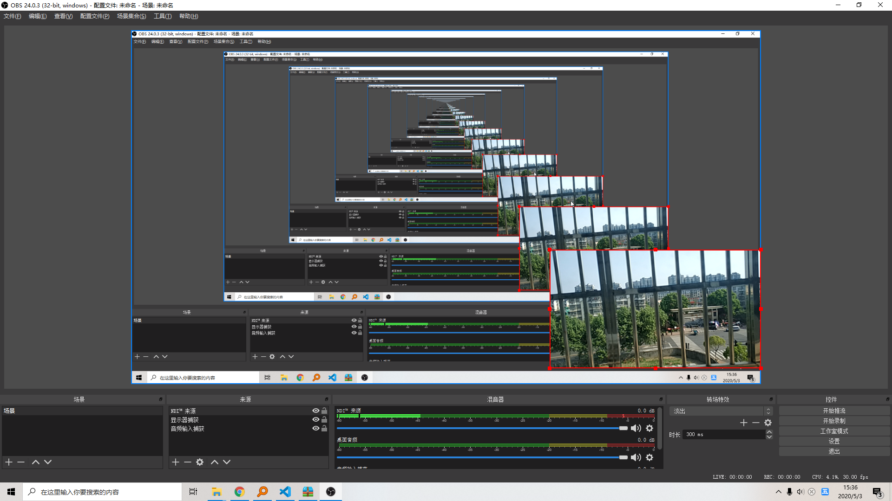

首先obs-studio是个开源的视频处理软件，github地址;
OBS Studio is software designed for capturing, compositing, encoding, recording, and streaming video content, efficiently.
关于obs源码的学习参考这里.
OBS使用手机摄像头
使用的软件是NDI，电脑上要为obs添加ndi插件(github地址)， 手机需要下载ndi，位于同一局域网下。
然后在obs的source那里添加一个NDI来源；添加一个audio输入就可以了。
可以选择录制、推流。
效果：
